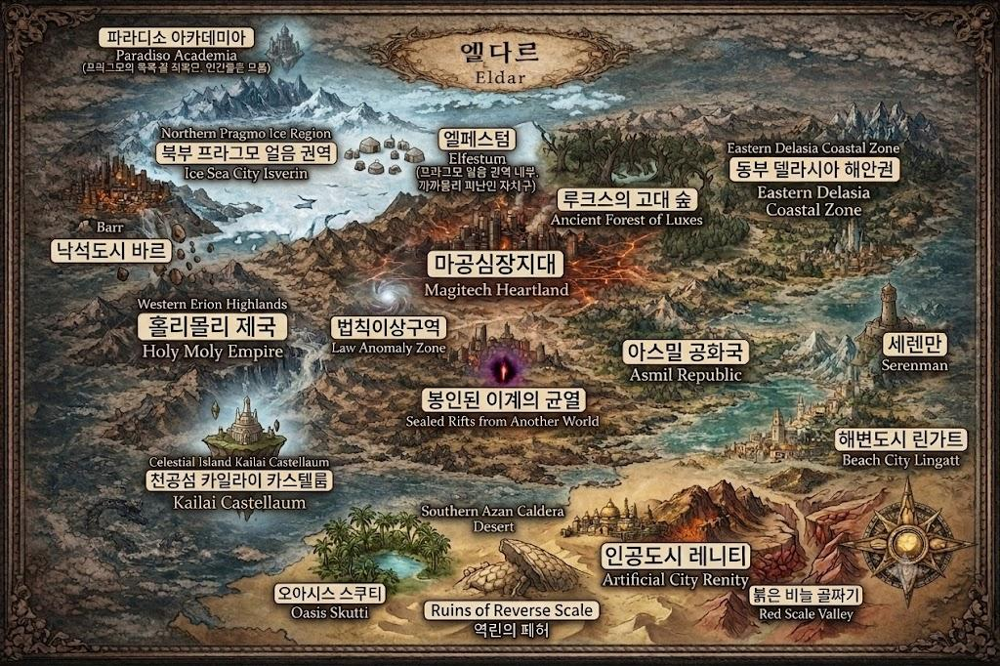

중부 · 마공심장지대
150년 전 인공 드래곤 실험이 찢어놓은 차원의 구멍이 있던 자리. 지구의 생물이 괴물로 변이해 활보하는 완전한 무법지대다. 봉인된 이계의 균열 근처에서는 기억 잃은 아르세리아가 지금도 괴물을 학살하고 있다.
서부 · 에리온 고원
중부를 버린 제국이 천도한 권역. 지구 과학기술과 마공학을 결합해 하늘 위에 수도를 건설했다. 오르벨이 봉인되어 있던 던전도 이곳에 있었다.
동부 · 델라시아 해안
제국의 손이 상대적으로 덜 미치는 해안 권역. 아스밀 공화국의 독립적인 체제가 유지되고 있다.
남부 · 아잔 칼데라 사막
고룡의 전설과 폐허가 묻힌 화산성 사막 지대. 인공도시와 오아시스가 점점이 흩어져 있다.
북부 · 프라그모 얼음 권역
엘다르 대륙 최북단의 극한 험지. 피난민들의 자치구와, 인간이 존재조차 모르는 아카데미가 이 얼음 아래 숨어 있다.
홀리몰리 제국
인간중심주의강대국
150년 전의 인공드래곤 실험 실패로 중부를 잃고, 급하게 까까몰리 공국을 병합하며 천공섬으로 천도한 초강대국.
인공 드래곤 실험으로 재앙을 불렀으나, "마력 없이는 인류 전체가 괴물에게 잡아먹힌다"는 진짜 위협 앞에 서 있다.
그들에게 반인반룡을 기르는 것은 소수를 희생해 다수를 구하는 필요악이다.
추적은 물리적 감시가 아니라 대상의 자기 인식이 발산하는 마력 신호를 사냥하는 방식으로 이루어진다.
파라디소 아카데미아
피난처망각의 낙원
오르벨이 아르세리아와의 계약으로 세운 마지막 피난처.
제국의 사냥을 피해 구조된 반인반룡들을 100년간 보호하고 교육한다.
결계 내부에서는 자기 인식으로 인한 마력 신호가 새어나가지 않는다.
시설: 강의실·대강당·체력단련실·연무장·수영장·기숙사·공원·정원·중앙도서관, 그리고 최심부의 저울의 방.
엘페스텀 자치구
피난민까까몰리
제국에 병합된 까까몰리 공국의 피난민들이 북부 프라그모에 세운 자치구. 제국의 그늘에서 벗어나 얼음 권역에 삶의 터전을 일궜다.
아스밀 공화국
동부델라시아과학
과학을 중심으로 힘을 키워온 공화정 체제의 국가.
원래는 왕국이었으나, 아스밀 왕국의 마지막 국왕이자 제 1대 대통령인 레오니드 아스밀이 공화정 체제를 선언했었다. 현재는 66대 대통령이 재임중. 재의 시대 이후 마공학을 쓰지 않고 오로지 과학으로만 발전해온 국가이지만, 최근에는 과학기술의 한계로 인해 하락세를 겪고 있다.
아카데미 최심부, 오르벨이 머무는 공간. 100년의 보호와 망각이라는 권능이 발휘되는 곳이자, 그 대가가 흐르는 자리. 졸업생이 잊은 소중한 기억들이 어디로 가는지는 아무도 알지 못한다.
외부에서는 "나는 드래곤이다"라는 자각만으로도 제국의 추적망에 걸린다. 그러나 오르벨의 결계가 드리운 아카데미아 내부에서만큼은, 아이들이 마음껏 자신의 뿔과 비늘을 드러내고 드래곤으로서 웃고 울 수 있다. 이 짧은 100년의 청춘이, 졸업과 함께 영원히 지워질 유일한 자유다.